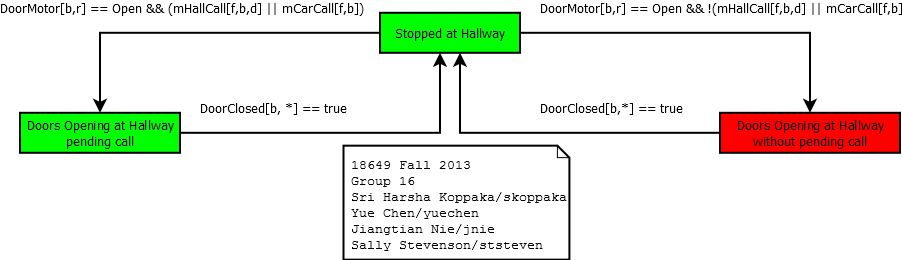

R-T6: The Car shall only stop at Floors for
which there are pending calls.
R-T7: The Car shall only open Doors at Hallways for which there are pending calls.
R-T8.1: If any door is open at a hallway and there are any pending calls at any other floor(s), a Car Lantern shall turn on.
R-T8.2: If one of the car lanterns is lit, the direction indicated shall not change while the doors are open.
R-T8.3: If one of the car lanterns is lit, the car shall service any calls in that direction first.
R-T9: The Drive shall be commanded to fast speed to the maximum degree practicable.
| Acceptance
Test Name |
Verification
Status |
Link to
Verification Results |
Notes |
| proj5acceptance1.pass |
pass / fail |
p5-1_verification.out |
If failed, identify the
specific source of the failure, such as requirement (list
requirement numbers), implementation (cite line file and
line numbers), monitor (cite line file and line numbers),
etc. |
| .... |